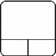

FreeCAD的 '鼠标模式 由用于在3D空间视觉导航并与显示对象进行交互的命令组成。 FreeCAD支持多种鼠标型号导航。默认的导航风格被称为“CAD导航”，并且非常简单实用，但FreeCAD还提供了替代的导航样式，您可以根据自己的喜好进行选择。
Contents
导航
对象处理对于所有工作台都是常见的。根据选择的导航方式，可以使用以下鼠标手势来控制对象位置和视图。
有两种方法来更改导航样式：
- 在首选项编辑器，显示部分，“3D视图”选项卡;
- 通过在3D视图区域的空白处右键单击，然后在上下文菜单中选择“导航样式”。
CAD导航（默认）
这是默认的导航样式，允许用户简单地控制视图，除了进行多选，不需要使用键盘键。
| Select | Pan | Zoom | Rotate View | Rotate View
Alternate Method |
|---|---|---|---|---|

|

|

|

|

|
| Press the left mouse button over an object you want to select. Holding down ctrl allows the selection of multiple objects. | Click the middle mouse button and move the object around to pan | Use the mouse wheel to zoom in and out. Clicking the middle mouse button re-centers the view to the location of the cursor. | Click first with the middle mouse button, hold it down, and then click the left mouse button and drag the mouse in the desired direction. The cursor location at the middle mouse button click determines the center of rotation. Rotation works like spinning a ball which rotates around its center. If the buttons are released before you stop the mouse motion, the object continues spinning, if this is enabled. A double click with the middle mouse button sets a new center of rotation. | Click first with the middle mouse button, hold it down, and then click the right mouse button and drag the mouse in the desired direction. This method works just like the previously described Rotate View that uses Middle Mouse Button + Left Mouse Button, except that the middle mouse button may be released after the right mouse button is pressed. Users who use the mouse with their right hand may find this Rotate View method easier than the previous method. |

|

|

|
||
| For the Pan mode, press the Ctrl key and press the right mouse button to pan (rev 0.17) | For the Zoom mode, press the Ctrl and Shift key and press the right mouse button to Zoom (rev 0.17) | For the Rotate mode, press the Shift key and press the right mouse button to rotate (rev 0.17) |
Inventor 导航
在Open Inventor（不要与Autodesk Inventor混淆）建模后的 Inventor 导航中，没有鼠标选择。为了选择对象，您必须按住 CTRL键。
| Select | Pan | Zoom | Rotate View |
|---|---|---|---|
| ctrl +
|
|
or
|
|
| Hold ctrl and press the left mouse button over an object you want to select. | Click the middle mouse button and move the object around. | Use the mouse wheel to zoom in and out, or click and hold the middle mouse button and click the left mouse button. | Click and drag with the left mouse button to rotate |
Blender 导航
在 Blender 导航中，以Blender为模型，没有单独的鼠标平移方式。为了平移视图，您必须按住 SHIFT键。
{kind=link}
触摸板导航
在触摸板导航中，既不是平移，也不是缩放，也不是旋转视图，仅限于鼠标（或仅限触摸板）操作。
| Select | Pan | Zoom | Rotate View |
|---|---|---|---|
| shift+ | PgUp / PgDn | alt+ | |
| Press the left mouse button over an object you want to select. | Hold shift and move the object around. | Use PgUp and PgDn to zoom in and out. | Hold alt and move the pointer. |
| or | or | ||
| shift+ctrl+ | shift+ctrl+ | ||
| Hold down both the shift and the ctrl keys, press the left mouse button, and move the pointer. | Hold down both the shift and the ctrl keys and move the pointer. |
{kind=link}
{kind=link}
手势导航（v0.16）
这种导航风格是针对触摸屏和笔的可用性量身定制的，但也可以与鼠标一起使用。
{kind=link}
{kind=link}
{kind=link}
{kind=link}
{kind=link}
{kind=link}
{kind=link}
Notes on Gesture Navigation style:
- on Windows, the actions of two-finger gestures are separated. The action depends on how one starts the gesture. For example, if one starts two-finger pan, the gesture will only pan. Changing the distance between fingers afterwards will not affect the scaling.
Maya 手势导航
在Maya手势导航中，按 ALT和鼠标按钮激活所有视图动作，以便为了正确使用此导航模式，需要一个3按钮鼠标。或者，可以使用手势，因为这种模式是通过正常的手势导航模式开发的。
选择对象
简单选择
可以通过单击鼠标左键来选择对象，方法是单击3D视图中的对象或通过在树状视图中选择对象。
预选
还有一个“预选”机制，通过将鼠标悬停在对象上，突出显示对象并在选择之前显示信息。如果您不喜欢这种行为，或者您的机器较慢，则可以在首选项中切换预选。
操纵对象
FreeCAD提供了可用于修改对象外观，形状或其他参数的句柄“操纵器”。
剪切平面是具有操纵器的对象的示例。可以使用“查看→剪切平面”菜单激活剪切平面
硬件支持
FreeCAD 同样支持一些 3D 输入设备.
Mac OS X 问题
最近我们从论坛的Mac用户那里得到报告，那些鼠标按键和按键组合不能像预期的那样工作。不幸的是，没有一个开发者拥有Mac，也不是其他的常规贡献者。我们需要您的帮助来确定哪些鼠标按键和按键组合起作用，以便我们可以更新此维基。